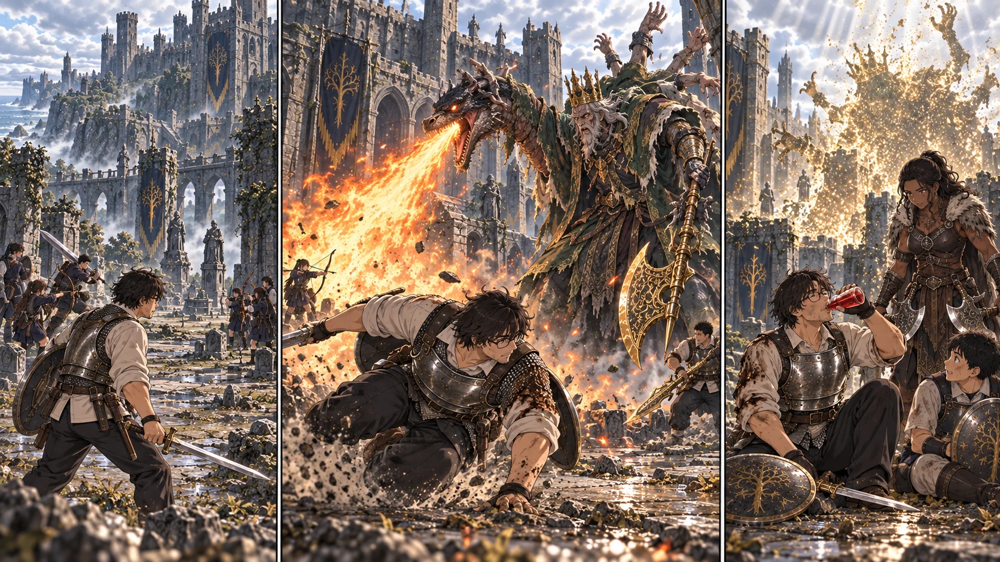

最新の本編へ前に立つのは、俺だ。

【DAY41 16:35｜奥まった小部屋】先生は、床の金色へ手を伸ばした。予備を残すことばかり考えて、帰れる場所を作るのが遅れた。今ここにいる十三人を一人ずつ数え、光に触れてもらう。誰も欠けていない今、蘇らせる相手はいない。けれど、帰還と補給の道が一本、確かにつながった。教会にいる二十人の分まで登録されたわけではない。
一同は既訪問の教会へ帰った。結衣に城内の経路と、接ぎ木の城主の話を伝える。花が空に近い矢筒を見せると、カーレはまず矢束を台へ置いた。通常矢百本で二百ルーン。さらに、この世界での見積として、夕食三十三人分と遠征隊の朝食十三人分が四十六、飲用水四リットルが八。鍋と水袋をDAY44朝まで借りる礼を二十。計二百七十四を支払い、共同財布は九百六になった。道具はまだ借り物だ。
買った食事は今夜と明朝の分で尽きる。余裕ができたわけではない。それでも、噛むものがあり、濡れた服を乾かせる夜は違った。先生は小盾の留めを点検した。祝福は傷と瓶を戻してくれる。欠けた刃も、袖のほつれも、そのままだ。颯の鎖骨に残るものまで消してくれるわけではない。
結衣が差し出した当番表には、見張りだけでなく、石の仮補修、道具の点検、盾と槍の型、救護の搬送練習まで並んでいた。「待つだけには、しません」先生はうなずいた。翌朝からは、確認済みの草地での狩りも任せる。遠くへは行かない。教会を空にしない。その範囲なら、任せられるだけの修行を、この二十人も積んできた。
【DAY42 07:10｜再集合】夜を休んだ十三人だけが、小部屋へ戻る。道中の通常兵は休息で再び立っている。ここを使えることと、城が安全になったことは別だった。陸と蓮は入口側を支える。本卓で負傷班を退避させるための役だ。霧の中へは先生と十人、そして金色の召喚から歩み出たネフェリが入る。
【07:39｜霧の前】大地が黄金のハルバードを掲げた。借り物の強さではない。皆が集めたルーンで、ようやく扱えるようにした重さだ。「黄金樹に誓って」の淡い光が、すぐ近くの先生と直人にも届く。今回は三人、短い時間だけの加護。全員を覆う無敵の膜ではない。先生は大地の肩を一度叩き、列の前へ出た。
【07:40｜城主の中庭】崩れた墓石の向こうに、竜の亡骸が横たわっていた。広い庭を囲む城壁。その中心で、幾本もの腕を重ねた男が黄金の斧を持ち上げる。「数を揃えたか、褪せ人ども。寄せ集めが、我が血に届くと思うてか」――王を名乗る声は大きい。先生には、誰よりもその血を信じたがっている声に聞こえた。
先生が一歩踏み込み、剣先で間合いを探る。振り下ろしを横へ外し、伸びた腕の先へ一撃。深くは追わない。ゴドリックの視線が動けば、また前へ出る。花と千夏は左右をずらし、先生の背中が射線に入るたび弦を止めた。悠と拓海も、斧が戻る隙だけを選んで既存の魔力弾を放つ。離れて撃てば安全、という相手ではない。渦を巻く風が、庭の土ごと射手の足元を攫った。
「下がるのは半歩。固まるな！」先生は盾を上げたが、大斧そのものを受け止めようとはしなかった。斧が地面を打ち、衝撃が広がる。その端から転がって抜ける。ネフェリが反対側で双斧を振り、直人と大地が一撃ずつ重ねた。全員で張りつかず、空けた道を次の一人が使う。修行の日々が、ようやく一つの動きになっていた。
【竜の腕】崩れかけた姿勢のまま、ゴドリックは竜へ向かった。先生はその意味を知っていた。「炎が来る。左右へ！」死んでいた竜の頭が、王の腕で息を吸う。赤い光が喉の奥に溜まった。「借りた力だと笑うか。ならば、その身で量るがよい！」炎は先生のいた場所を横薙ぎにした。
間に合いきらなかった。転がって抜けた先生の袖に火が走り、腕が熱を持つ。歯を食いしばって瓶へ手を伸ばすと、ネフェリがすでに前へ出ていた。「飲め。そこは私が埋める！」先生は一本使い、呼吸を整えた。治ったからと、そのまま同じ場所へ戻らない。竜の頭の向きと、生徒の立つ場所を見てから、斜めに走り込んだ。
花には、先生の背中がいつもより小さく見えた。あの鎧の中身は、自分たちと同じ、人ひとりだ。守られる側だからと、慌てて全部撃っていいわけではない。先生が腕を抜ける。竜の首が追う。今なら向こうに味方はいない。花はそこで初めて、指を離した。
【決着】ゴドリックが弓の方へ身体を向ける。先生は近寄り、剣を打ち込んでから外へ逃れた。一撃で注意を固定できる保証などない。振り向いたのを確かめて、初めて声を出す。「こっちだ！」続く衝撃で先生が膝をつき、健太も盾越しに肩を打った。二人とも自分の赤瓶を一本。ネフェリと大地が間を持たせ、ほかの班まで後退させない。
焦りかけた直人の足が止まった。嵐踏みを重ねて無理に崩すより、今は空いた脇へ大剣を一度だけ。大地の黄金の刃が逆側から走り、ネフェリの斧が続く。先生が射線を空け、二本の矢が届いた。積み重ねた傷に、接ぎ木の身体がついに耐えられなくなった。王は黄金樹の方へ腕を伸ばす。「我が……血は……」その先は、風に消えた。
【08:10｜十三人の点呼】陸と蓮が合流する。名前を呼ぶたび返事がある。先生も健太も瓶で身体は回復したが、焦げた袖と盾の傷は残った。先生は勝ち名乗りより先に、最後の一人の返事を待った。それからようやく、座り込んだ。「……勝ったな」今度は、生徒にだけ危険を背負わせた勝利ではなかった。
ネフェリは消えゆく城主を見ていた。「ここで奪われた者たちは、戻らない。だが、これ以上は奪わせずに済む」彼女が戦った理由は、先生たちの帰還とは違う。それでも今日、同じ敵を倒した。その礼を伝えると、召喚の姿は静かに薄れた。彼女をクラスの一員に数えることも、同じ復活の約束に含めることもしない。
戦利品は二千ルーン――原作二万を、この卓の会計に合わせた額――と、ゴドリックの大ルーン、接ぎ木の追憶。大ルーンはまだ力を取り戻しておらず、追憶も武器へ交換していない。奥まった小部屋がすでに移動拠点なので、庭に現れた新しい祝福は今回は未解放で残す。城内の通常兵が消えたわけではない。教会の二十人をここへ連れてくる仕事も、まだ残っている。
【同じ朝｜教会の草地】隼人が率いた八人は、航と亮の弓を中心に鹿一頭を確保して戻った。矢は二本ずつ使い、術も瓶も使わなかった。結衣は残る十二人で見張りと交代訓練を回している。戻ってきた肉は十二食分ほど、まだ調理前。二ルーンを教会の財布へ記す。城で何が起きたかは、まだ知らない。先生たちが帰ってくる場所を保つのが、今日の自分たちの仕事だった。